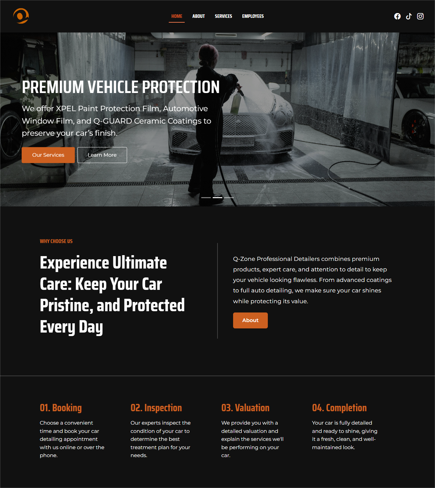

Home Page
This is the Landing Page of the Q-Zone Professional Detailers practice website. It introduces the business and its services, like car detailing, paint protection, and coatings. The page shows why choose Q-Zone, explains the service process from booking to completion, and displays recent projects. It also includes client testimonials, a FAQ section, and links to branches, giving visitors a clear and easy way to learn about the business.
